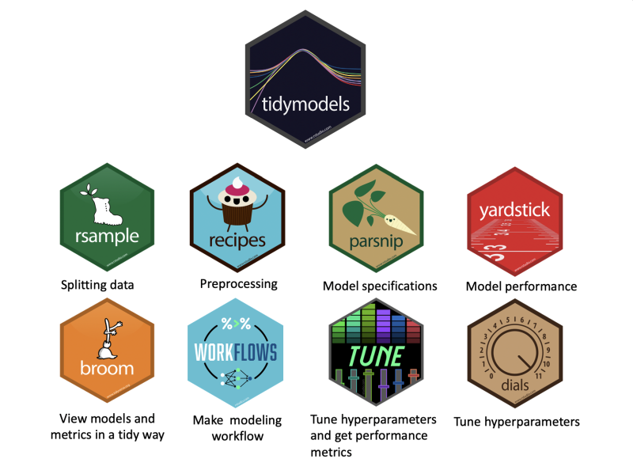

“The only way to learn mathematics is to do mathematics.” - Paul Halmos. Taking time out of the day-to-day rush to finally learn how to use {tidymodels} for machine learning. These are the notebooks that I did to enter in this universe.
Better later than never. I take a time to finally learn how to use {tidymodels} for machine learning. Tidymodels is a set of packages that replaces the {caret} package as a ML framework to cover various aspects of the pipeline and try to standardizing the use of many different algorithms.
It’s powerful set of packages, but also with a very different APIs and design principles, so I have to stop and learn how to use doing some scripts to test the several packages of this universe. This one bellow is the “simplest case” and a put other cases in my GitHub.

The simplest steps to make a straightforward ML pipeline using {tidyverse} packages follows these steps:
{rsample} to split the dataset between training and testing subsets{recipes} to make some data preprocessing script{parsnip} to define a ranger random forest model{workflow} object{yardstick} the check the model performancelibrary(tidymodels)
library(mlbench) # mlbench is a library with several dataset to perform ML training
library(skimr) # to look the dataset
# loading "Boston Housing" dataset
data("BostonHousing")Housing data contains 506 census tracts of Boston from the 1970 census. The dataframe BostonHousing contains the original data by Harrison and Rubinfeld (1979), the dataframe BostonHousing2 the corrected version with additional spatial information.
You can include this data by installing mlbench library or download the dataset. The data has following features, medv being the target variable:
BostonHousing %>%
skim()| Name | Piped data |
| Number of rows | 506 |
| Number of columns | 14 |
| _______________________ | |
| Column type frequency: | |
| factor | 1 |
| numeric | 13 |
| ________________________ | |
| Group variables | None |
Variable type: factor
| skim_variable | n_missing | complete_rate | ordered | n_unique | top_counts |
|---|---|---|---|---|---|
| chas | 0 | 1 | FALSE | 2 | 0: 471, 1: 35 |
Variable type: numeric
| skim_variable | n_missing | complete_rate | mean | sd | p0 | p25 | p50 | p75 | p100 | hist |
|---|---|---|---|---|---|---|---|---|---|---|
| crim | 0 | 1 | 3.61 | 8.60 | 0.01 | 0.08 | 0.26 | 3.68 | 88.98 | ▇▁▁▁▁ |
| zn | 0 | 1 | 11.36 | 23.32 | 0.00 | 0.00 | 0.00 | 12.50 | 100.00 | ▇▁▁▁▁ |
| indus | 0 | 1 | 11.14 | 6.86 | 0.46 | 5.19 | 9.69 | 18.10 | 27.74 | ▇▆▁▇▁ |
| nox | 0 | 1 | 0.55 | 0.12 | 0.38 | 0.45 | 0.54 | 0.62 | 0.87 | ▇▇▆▅▁ |
| rm | 0 | 1 | 6.28 | 0.70 | 3.56 | 5.89 | 6.21 | 6.62 | 8.78 | ▁▂▇▂▁ |
| age | 0 | 1 | 68.57 | 28.15 | 2.90 | 45.02 | 77.50 | 94.07 | 100.00 | ▂▂▂▃▇ |
| dis | 0 | 1 | 3.80 | 2.11 | 1.13 | 2.10 | 3.21 | 5.19 | 12.13 | ▇▅▂▁▁ |
| rad | 0 | 1 | 9.55 | 8.71 | 1.00 | 4.00 | 5.00 | 24.00 | 24.00 | ▇▂▁▁▃ |
| tax | 0 | 1 | 408.24 | 168.54 | 187.00 | 279.00 | 330.00 | 666.00 | 711.00 | ▇▇▃▁▇ |
| ptratio | 0 | 1 | 18.46 | 2.16 | 12.60 | 17.40 | 19.05 | 20.20 | 22.00 | ▁▃▅▅▇ |
| b | 0 | 1 | 356.67 | 91.29 | 0.32 | 375.38 | 391.44 | 396.22 | 396.90 | ▁▁▁▁▇ |
| lstat | 0 | 1 | 12.65 | 7.14 | 1.73 | 6.95 | 11.36 | 16.96 | 37.97 | ▇▇▅▂▁ |
| medv | 0 | 1 | 22.53 | 9.20 | 5.00 | 17.02 | 21.20 | 25.00 | 50.00 | ▂▇▅▁▁ |
We’ll try to predict medv (median value of owner-occupied homes).
boston_split <- initial_split(BostonHousing)
boston_split## <Analysis/Assess/Total>
## <380/126/506>recp <- BostonHousing %>%
recipe(medv~.) %>% # formula goes here
step_nzv(all_predictors(), -all_nominal()) %>% # remove near zero var
step_center(all_predictors(),-all_nominal()) %>% # center
step_scale(all_predictors(),-all_nominal()) %>% # scale
step_BoxCox(all_predictors(), -all_nominal()) # box cox normalization
recp## Data Recipe
##
## Inputs:
##
## role #variables
## outcome 1
## predictor 13
##
## Operations:
##
## Sparse, unbalanced variable filter on all_predictors(), -all_nominal()
## Centering for all_predictors(), -all_nominal()
## Scaling for all_predictors(), -all_nominal()
## Box-Cox transformation on all_predictors(), -all_nominal()model_eng <- rand_forest(mode="regression") %>%
set_engine("ranger")
model_eng## Random Forest Model Specification (regression)
##
## Computational engine: rangerwf <- workflow() %>%
add_recipe(recp) %>% # preprocessing specification (with formula)
add_model(model_eng) # model specification
wf## == Workflow ====================================================================
## Preprocessor: Recipe
## Model: rand_forest()
##
## -- Preprocessor ----------------------------------------------------------------
## 4 Recipe Steps
##
## * step_nzv()
## * step_center()
## * step_scale()
## * step_BoxCox()
##
## -- Model -----------------------------------------------------------------------
## Random Forest Model Specification (regression)
##
## Computational engine: ranger# the do all by itself
# calculates the data preprocessing (recipe)
# apply to the training set
# fit the model using it
model_fit <- fit(wf, training(boston_split))
model_fit## == Workflow [trained] ==========================================================
## Preprocessor: Recipe
## Model: rand_forest()
##
## -- Preprocessor ----------------------------------------------------------------
## 4 Recipe Steps
##
## * step_nzv()
## * step_center()
## * step_scale()
## * step_BoxCox()
##
## -- Model -----------------------------------------------------------------------
## Ranger result
##
## Call:
## ranger::ranger(x = maybe_data_frame(x), y = y, num.threads = 1, verbose = FALSE, seed = sample.int(10^5, 1))
##
## Type: Regression
## Number of trees: 500
## Sample size: 380
## Number of independent variables: 13
## Mtry: 3
## Target node size: 5
## Variable importance mode: none
## Splitrule: variance
## OOB prediction error (MSE): 11.94244
## R squared (OOB): 0.8714785# the prediction applied on the fitted automatically
# apply the trained transformation on the new dataset
# and predict the output using the trained model
y_hat <- predict(model_fit, testing(boston_split))
head(y_hat)## # A tibble: 6 x 1
## .pred
## <dbl>
## 1 29.4
## 2 34.9
## 3 20.0
## 4 21.2
## 5 20.5
## 6 19.5y_hat %>%
bind_cols(testing(boston_split)) %>% # binds the "true value"
metrics(truth=medv, estimate=.pred) # get the estimation metrics (automatically)## # A tibble: 3 x 3
## .metric .estimator .estimate
## <chr> <chr> <dbl>
## 1 rmse standard 2.75
## 2 rsq standard 0.873
## 3 mae standard 1.97I create a GitHub with with others notebooks that I did to learn to use the Tidymodels package and to serve as a reference guide to myself:
library(tidymodels)
library(mlbench) # mlbench is a library with several dataset to perform ML training
library(skimr) # to look the dataset
# loading "Boston Housing" dataset
data("BostonHousing")
# data overview
BostonHousing %>%
skim()
# split
boston_split <- initial_split(BostonHousing)
# recipe: preprocessing script
recp <- BostonHousing %>%
recipe(medv~.) %>% # formula goes here
step_nzv(all_predictors(), -all_nominal()) %>% # remove near zero var
step_center(all_predictors(),-all_nominal()) %>% # center
step_scale(all_predictors(),-all_nominal()) %>% # scale
step_BoxCox(all_predictors(), -all_nominal()) # box cox normalization
# Model Specification
model_eng <- rand_forest(mode="regression") %>%
set_engine("ranger")
# Workflow
wf <- workflow() %>%
add_recipe(recp) %>% # preprocessing specification (with formula)
add_model(model_eng) # model specification
# Training the model with workflow
# the do all by itself calculates the data preprocessing (recipe)
# apply to the training set fit the model using it
model_fit <- fit(wf, training(boston_split))
# Predict
y_hat <- predict(model_fit, testing(boston_split))
head(y_hat)
# Evaluate
y_hat %>%
bind_cols(testing(boston_split)) %>% # binds the "true value"
metrics(truth=medv, estimate=.pred) # get the estimation metrics (automatically)